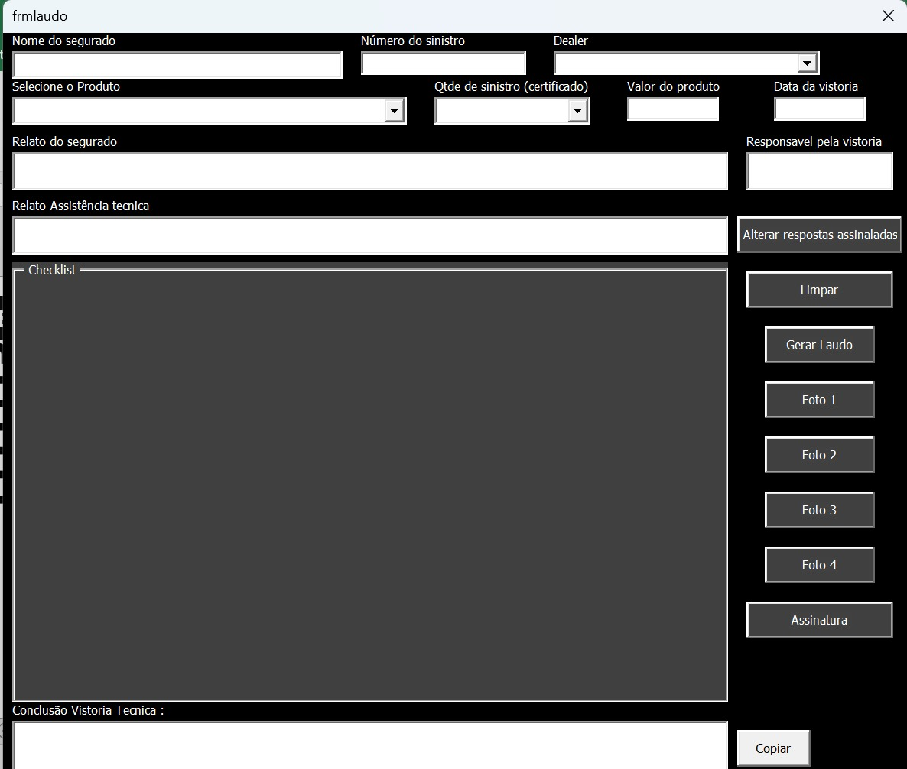
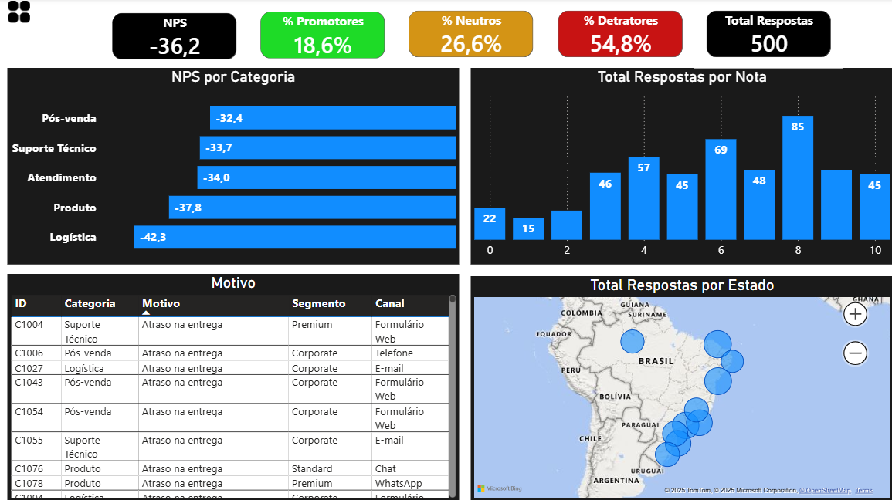
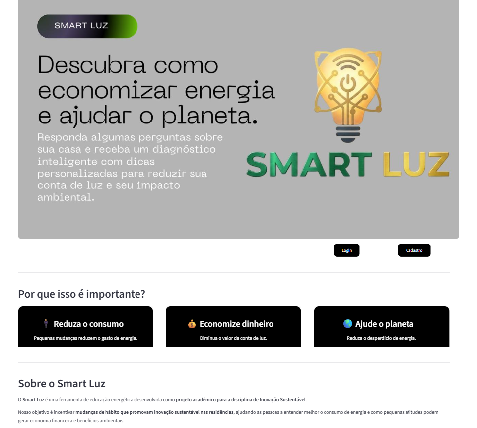
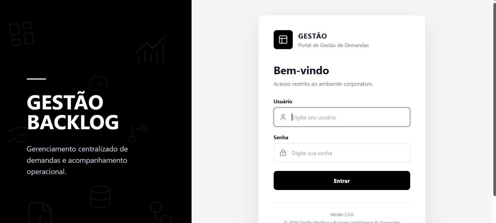

Profissional com mais de 3 anos transformando dados complexos em decisões estratégicas. Especialista em Power BI, Excel/VBA e automação de processos, com passagem por empresas líderes como Assurant e Saint-Gobain. Perfil analítico com forte senso de dono e atuação transversal entre operações, comercial e dados.
Comecei minha trajetória em 2021 no ambiente corporativo da Connectinglog, onde desenvolvi minha visão de processo, disciplina e relacionamento com clientes. Foi o ponto de partida de uma carreira construída sobre curiosidade e entrega consistente.
Na Saint-Gobain, evolui para o papel de suporte estratégico à gestão comercial — construindo KPIs, elaborando apresentações executivas e realizando benchmarking de mercado para múltiplas squads. Aprendi a transformar dados dispersos em narrativas que orientam decisões de liderança.
Na Assurant, dei o salto técnico definitivo. Além de gerenciar o ciclo completo de sinistros e contratos Trade Inn com interface internacional em inglês, construí soluções end-to-end em Excel/VBA e Power BI — ferramentas de automação que estão ativamente em uso na operação, reduzindo retrabalho e ampliando a capacidade analítica da equipe.
Busco minha próxima posição como Analista de Operações ou Dados, onde possa ampliar impacto por meio de automação inteligente, inteligência analítica e melhoria contínua.
Uma trajetória construída em empresas de grande porte, com crescente protagonismo técnico e analítico.
Gestão end-to-end do ciclo de sinistros — da abertura ao destinação final — com rastreabilidade, conformidade e cumprimento rigoroso de SLA. Paralelamente, desenvolve soluções técnicas em VBA e Power BI que automatizam controles e ampliam a capacidade analítica da equipe.
Gestão do ciclo de vida de clientes Trade Inn: onboarding, análise de bids, precificação e renovação contratual. Interface direta com áreas jurídica e comercial, além de comunicação formal em inglês com a área internacional para aprovação de contratos.
Suporte estratégico à gestão comercial com análise de desempenho de múltiplas squads, construção de KPIs e elaboração de materiais executivos. Atuação transversal com marketing, pricing, produto e vendas.
Primeiro contato com o ambiente corporativo. Suporte a operações financeiras, atendimento ao cliente, prospecção ativa e uso do sistema Bsoft para controle de faturamento e contas.
Combinação de ferramentas analíticas, automação e visão estratégica para transformar dados em decisões.
Soluções reais construídas e implementadas — automações que rodam em produção, dashboards usados por gestores.
Sistema de monitoramento de SLA com classificação dinâmica em 3 níveis, consolidação automática de arquivos e pivot tables — atualmente em uso operacional na Assurant.

Formulário inteligente com checklist dinâmico por tipo de produto, upload de fotos, geração automática de texto conclusivo e exportação em PDF com 1 clique.

Visões analíticas de sinistros, qualidade e NPS com modelagem de dados, DAX e Power Query. Utilizados pela gestão para acompanhamento de indicadores e tomada de decisão.

Aplicação web com autenticação de usuário, diagnóstico energético personalizado e banco de dados SQLite integrado. Desenvolvida para projeto universitário de sustentabilidade.

Portal para gestão de demandas com usuários cadastrados, assistências parametrizadas por SLA, visões dinâmicas, planilhas priorizadas e automação de e-mails padronizados.
Framework de indicadores de performance para múltiplas squads comerciais, com consolidação periódica, análise comparativa e apresentações executivas para a liderança.
Formação técnica contínua, com foco em ferramentas de dados e análise.
Aberta a oportunidades em Análise de Dados, Operações e Business Intelligence. Respondo em até 24h.